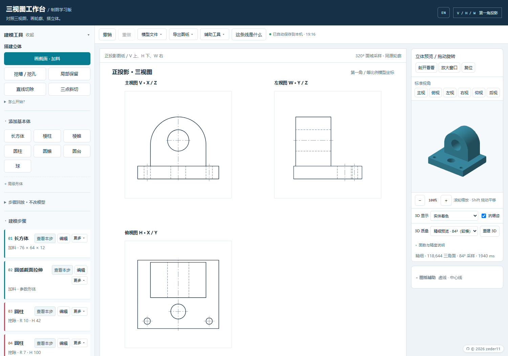
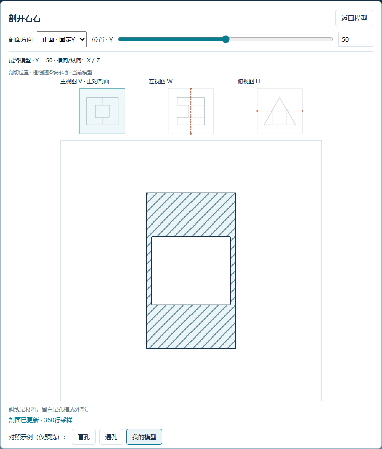
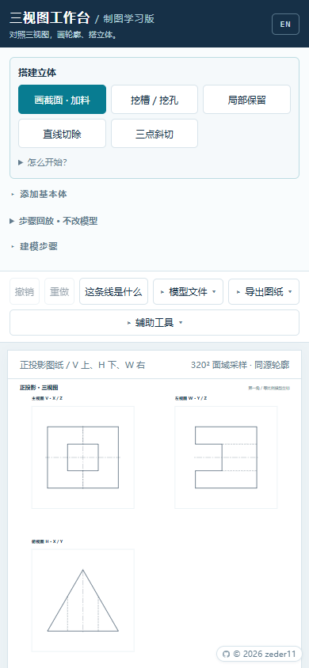

三视图工作台three-view workbench · 工程制图学习工具
描截面、拉伸、挖槽、切一刀，用视图把立体一步步搭出来，再回头核对三视图。离线单文件，双击就能用。
PolyForm NC · v0.6.1
普通建模、导入和图纸导出可离线完成。主动使用在线 AI 建模或复核时，输入的文字、图片或复核图会按功能发送给所选服务商。
v0.6.1：完善全剖与中心线、AI 独立预览和复核范围，修复相切轮廓及安全保存。旧模型可直接打开。

本次更新
- 相切轮廓修复：补回本该可见的外框，避免错画成虚线。只补真实的投影边界，普通光滑接缝仍不画。
- 全剖与中心线：A–A 全剖、腰圆与全剖中心线、联动只读 3D，支持图纸导出。
- AI 核对与保存：独立预览、限定复核可改步骤、明确模型恢复，以及接口和导入安全修复。
- 旧模型直接兼容：保留全剖视图、中心线和原有建模功能，不必修改半径或重新建模。


能做什么
- 描截面拉伸：三角形、梯形、L 形，直线与圆弧可逐段组合；圆弧接缝不会画成一排棱线
- 画截面挖除：通槽、盲槽、圆孔（真圆柱刀具）
- 局部保留轮廓：只切掉指定深度内轮廓外侧的材料，原有孔槽保留
- 视图画线切割：切平面在该视图上积聚成直线；三点定截平面自动预览斜切结果
- 圆弧相切：双端一起相切、相邻段光滑调整、端点链式联动与持续约束，无解时会说明原因
- 步骤回放：逐刀查看中间结果，可显示「与上一步的差异」，不占撤销记录
- 题图叠图：铺在草稿纸下，两点标定后直接描；描出的线可比较候选切法
- 这条线是什么：点已有实线或虚线，查看它在立体上的位置和对应的建模步骤
- 点位对应：点一处，另两视图标出长对正／高平齐／宽相等
- 轮廓显示：按原始曲面生成连续轮廓，去除网格毛边；被遮挡棱用虚线显示
- 3D 质量：快速 42³／精细 84³／超精细 128³，调整实体细腻度；轮廓清晰度独立
- 中英切换：右上角一键切换，导出图纸跟着换语言
- 命名记录：把模型连视角、显示模式和缩略图存进浏览器本地，起名如
圆孔支座，随时回看
先说清楚：它是采样法计算，不是精确 CAD。比一个采样格还窄的槽或薄片可能消失（可调高精度）；立体网格比三视图粗，只用来理解，想更顺可以切「超精细 · 128³」。AI 部分只给候选，需自己核对。建议当核对工具，不要直接把结果当作业答案。